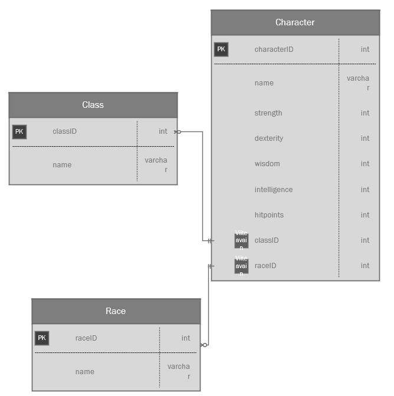

Tässä harjoituksessa kokeillaan käsitellä taulua jossa on yhteyksiä muihin tauluihin. Muokattavaan tauluun on tarkoitus tallettaa vierasavain ja lomakkeella halutaan näyttää käyttäjälle tekstimuotoinen kenttä.

Jos käytössä on vain yksi schema niin kannattaa nimetä tietokannan taulut siten, että ne pysyvät lähkkäin (h11_race, h11_class, h11_character).
Luo taulu Character jolla on kentät Name, ClassID, RaceID, Strength(int), Dexterity (int), Intelligence (int), Wisdom (int), Charisma (int), Level(int) sekä HitPoints (int). Lisää Relation View -näkymässä relaatiot.
Tee lomake jolla voidaan lisätä uusia hahmoja tietokantatauluun. Rodun ja Luokan valinta tulisi tapahtua select-ohjainten avulla.
Nyt tarvitaan select-ohjain jonka option-arvoissa näytetään rodun tai luokan nimi, value-attribuutissa näytetään tietokannan id-kentän arvo.
Tee nappi joka arpoo JavaScriptillä kenttien Strength - Charisma kenttien arvoksi jonkin kokonaisluvun väliltä 3-18 jotta käyttäjän ei tarvitse syöttää niitä itse. Pitäisikö valitun rodun vaikuttaa jotenkin arvontaan?
Hae tietokantataulustasi näkyviin luodut hahmot. Voit näyttää tiedot taulukossa tai listassa. Hae tiedot myös tauluista race ja class.
Näytä kentät: hahmon nimi, luokan nimi, rodun nimi, ominaisuudet (hp, srt, dex, cha, int, wis)
Tarvitset INNER JOIN -kyselyä. Hae ensin kaikki tiedot taulusta Character, sen jälkeen INNER JOIN tauluun Race ja toinen INNER JOIN tauluun Class. Kokeile tehdä kysely ensin phpMyAdminin SQL-ikkunassa.
Ratkaisu: SELECT h11_race.name AS RaceName, h11_class.name AS ClassName, h11_character.name As PlayerName, h11_character.* FROM `h11_character` inner join h11_race on h11_race.raceid=h11_character.raceID inner join h11_class on h11_class.classID=h11_character.classID
Lisää tekstikenttä jonka avulla voidaan hakea tietoja. Kun käyttäjä syöttää tekstikenttään tiedon ja painaa Hae-painiketta niin yritetään hakea hahmoja joiden nimessä tämä teksti sisällä.
Esimerkiksi syöte "testi", haetaan
... WHERE characters.name LIKE '%testi%'
Yhdistä tämä edelliseen tehtävään.
Lisää painike jonka avulla voidaan luoda JSON-tiedosto tietokannan taulun Character tiedoista.
Kokeile json_encode()-funktiota
Voit kokeilla tulostaa json-tiedon näytölle. Tarkoitus on kuitenkin kirjoittaa json-tiedosto (esim. character.json). Kokeile tiedoston kirjoittamista.
Voit lukea tiedot assosiatiiviseksi tauluksi esimerkiksi tähän tapaan:
$out = [];
foreach($rows as $row) {
$out[] = array("gameid" => $row["gameid"], "name" => $row["name"],"company" => $row["company"]);
}
$txt = json_encode($out);
(Jos haluat koko taulun niin käytä FETCH_ASSOC-parametriä.)